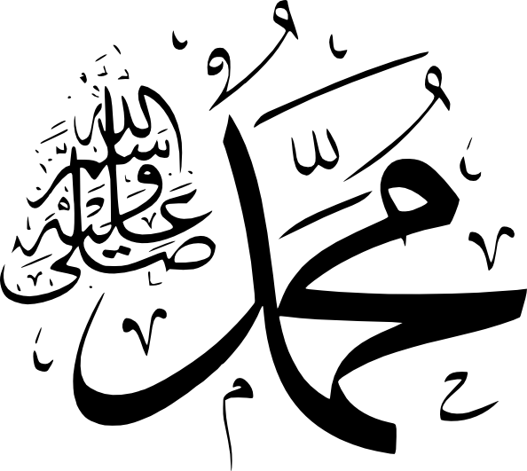

Hayat Sahabîlerle Güzel
Yasin Suresi (İlk Sayfa)
St. Gallen Erkekler
Grup İlahi
Zürich Erkekler
St. Gallen Kızlar
Zürich Kızlar
Grup Performansı
Keman Eşliğinde
Tüm Kategoriler ve Almanca Kategorisi